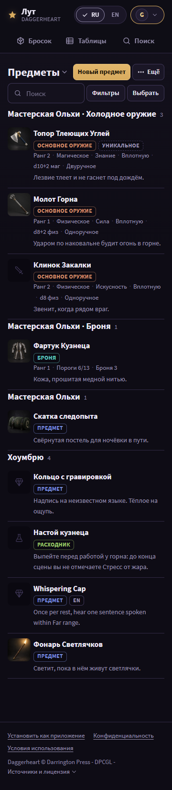
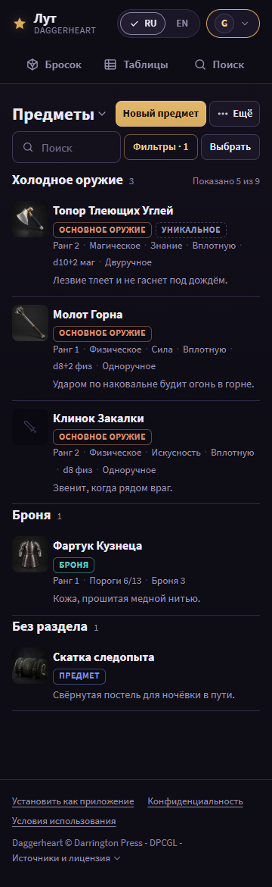
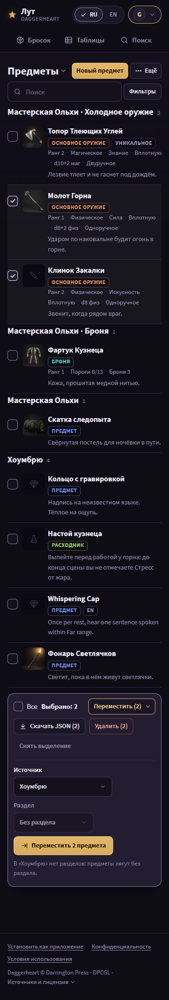

Batch 6 - homebrew editor, homebrew pages and imports
This page shows the batch 6 mock (homebrew editor, the «Мои предметы» tabs and the import) for the owner to confirm before the implementer starts. Round 3 applies the owner's answers, the first-screen rule (plan.md section 14) and plan review plan-1-3 (R2, R3, N7).
Open a state at state.html?s=<state>&lang=en. Renders: <state>__<width>__<lang>.png, 80 PNGs at 360 and 1180 px, RU and EN. Shared code in ../direction/ is read-only; u.js, u.css and the copies base.css, r.css are this unit's.
Owner answers


First screen
The top of the primary content below the top of the header, at scroll 0, at 360x640 and 1180x720 (../measure.mjs's method; this unit's copy also measures the extra states). Design target 240 / 270 px; the assert stays at 40%: 256 / 288 px (plan.md section 14, plan review plan-1-3 R2). Green: at the target; gold: inside the limit, past the target; red: past the limit.
| State | Primary content (EN / RU) | Controls above it (RU / EN) | 360 RU | 360 EN | 1180 RU | 1180 EN | Verdict |
|---|---|---|---|---|---|---|---|
homebrew-items | first item row / «первая строка предмета» | «Предметы ▾» / "Items ▾", «Новый предмет» / "New item", «Фильтры» / "Filters", «Ещё» / "More" | 255 | 255 | 223 | 223 | limit only |
homebrew-items | first group head / «заголовок первой группы» | «Предметы ▾» / "Items ▾", «Новый предмет» / "New item", «Фильтры» / "Filters", «Ещё» / "More" | 223 | 223 | 189 | 189 | target |
homebrew-filtered | first item row / «первая строка предмета» | «Фильтры · 1» / "Filters · 1", as homebrew-items | 255 | 255 | 223 | 223 | limit only |
homebrew-sources | first source row / «первая строка источника» | «Источники ▾» / "Sources ▾", «Новый источник» / "New source", «Ещё» / "More" | 241 | 209 | 185 | 185 | limit only |
homebrew-sets | first set row / «первая строка комплекта» | «Комплекты ▾» / "Sets ▾", «Новый комплект» / "New set", «Ещё» / "More" | 241 | 209 | 185 | 185 | limit only |
homebrew-rules | first rule card row / «первая строка карты правил» | «Карты правил ▾» / "Rule cards ▾", «Новая карта правил» / "New rule card", «Ещё» / "More" | 241 | 209 | 185 | 185 | limit only |
editor | first form field / «первое поле формы» | «Мои предметы» / "My items" (breadcrumb), the item name | 228 | 228 | 187 | 187 | target |
editor-longname | first form field, 120-character name / «первое поле, имя 120 знаков» | as editor, a 120-character name | 228 | 228 | 215 | 215 | target |
Changes in round 5 (mock 3's list head pattern)
- Mock 3's final list head pattern: at 360 the title row is the tab picker, «Новый предмет» and «Ещё» (import, pin); the search row is «Поиск» (140 px or more), «Фильтры» (lit while N > 0: a gold label on a 45% gold border) and «Выбрать» last, no icons (M3-2, M3-3, M3-4, M3-7, M6-2).
- At 1180 the title row holds the title, the pin, the four tabs and «Новый предмет»; the search row holds the search, the count, «Импорт из файла» and «Выбрать» last.
- One selection bar, sticky at the bottom of the list, with «Снять выделение» / "Clear the selection" last (M3-5).
- The filter-active state is mock 3's corrected one: «Фильтры · 1» lit and «Показано 5 из 9» (in the first group head at 360, in the search row at 1180); no pill row at any width; «Сбросить» and «Ссылка на фильтры» in the filter column head at 1180 and the sheet head at 360 (the sheet foot keeps «Сбросить»). Under a source filter the group heads drop the source name («Холодное оружие»), so the count fits on the first one. The counter «9 предметов из 100» (FEATURES rule 1) sits in the 1180 search row and in the picker sheet at 360.
Changes in round 4 (reviews/mocks-1.md)
- Review mocks-1 (round 4): the pin reads «Открывать при запуске» / "Open on start" (M2-2): visible by the title at 1180, in «Ещё» at 360.
- «Урон» labels its two inputs, «Кость урона» and «Бонус к урону» (M6-1, rule 15b).
- A pressed segment shows a check before its label, the editor preview included (M6-3); the language switch too (X-3).
- The footer keeps the DPCGL fold «Источники и лицензия ▾» (X-3).
- The selection bar keeps the spec label «Снять выделение».
Changes in round 3
- The head follows the catalog (R3): at 1180 the title, the four tabs, «Новый предмет» and «Ещё» on one row; at 360 the title is the tab picker «Предметы ▾» with «Новый предмет» beside it, and one row holds the search, «Фильтры» and «Ещё».
- «Импорт из файла» and the pin move into «Ещё» (plan.md section 14: rule 9's import departure is rewritten); at 360 «Ещё» also holds «Выбрать», as the catalog.
- The picker shows no count (R3); the tab counts are in the picker sheet and the 1180 tabs, the item counts in the group heads.
- The search placeholder is «Поиск» / "Search": «Найти предмет» did not fit the 360 search field.
- The editor: the back link joins the title row; the title takes one line at 360 (the Name field holds the full name); the «Хоумбрю» badge goes, because every item in the editor is the author's own.
- States removed: the question options (B and C) and «Справка»; added:
homebrew-tabs,homebrew-more,homebrew-sets-empty,editor-relations,editor-longname.
Differences from plan.md and from R
- At 360 the first item row starts at 255 px: inside the 256 limit, 15 px past the 240 target. The first group head starts at 223. Recommendation: the
/homebrewprimary marker is the first group head, as/tablesuses its first section head (plan.md section 14). Next option, if the row must meet 240: drop the group heads at 360. - At 360 in RU the Rule cards head takes two lines («Карты правил ▾» beside «Новая карта правил»): its first row starts at 242, inside the limit.
- A filter is removed from the filter column or the sheet: no list page draws a pill row (mock 3).
- The four tabs at 1180 sit in the title row (R: a row of their own).
- Sources and Rule cards have no «Выбрать»: only the Items tab has bulk actions today.
- A selected row has no side stripe (R
r.css.rl.sel; detectorside-tab); this folder'sr.csscopy drops it.
Shared patterns and their owners
- The empty-state pattern is batch 3 (
mocks/3/), the error-page pattern batch 4 (mocks/4/), the toast, the header and the account control batch 2 (mocks/2/), the type, the chips and the pressed default batch 1 (mocks/1/), all unit A. The list-page head pattern (the picker title, the search with «Фильтры», «Выбрать» in «Ещё» at 360 and in the search row at 1180) is the catalog's (mocks/3/). A state that uses one is re-rendered after its owner mock is confirmed. - Ground: the linear page ground
linear-gradient(180deg, var(--bg2) 0, var(--bg) 520px)(owner, 2026-10-29). The no-picture well is the kind glyph; the "?" pedestal is gone (owner, 2026-10-29).
Impeccable critique
- P2, 360: the search field is narrow (about 130 px) beside «Фильтры» and «Ещё», as in the catalog.
- P2, clarity: two one-line captions stay in the editor («Одно снаряжение на рангах 1-4...», the set bonus). Each states a fact of the item.
- P2, gold budget: gold on «Новый предмет», the lit tab, the picked filter chip and the lit account control only.
- Detector (
impeccable detect, this folder): 0 slop warnings; 4design-system-fontwarnings (Source Sans 3 is not in DESIGN.md until batch 1 writes it) and advisories for literal sizes and colors from R's copied CSS.
States


Items tab with 9 items, in the catalog's head pattern (plan review R3). 1180: the title, the four tabs with counts, «Новый предмет» and «Ещё» (import, pin) on one row; the search row (search, count, «Выбрать») beside the filter column (f74eae09). 360: the title is the tab picker «Предметы ▾» with «Новый предмет» beside it; one row holds the search, «Фильтры» and «Ещё» («Выбрать», import, pin). Rows have no checkbox column. No «Справка» (owner, 2026-10-29).



A source picked (mock 3's filter-active state): the chip lit in gold, «Фильтры · 1» lit, «Показано 5 из 9» in the first group head at 360 and in the search row at 1180, no pill row; «Сбросить» and «Ссылка на фильтры» in the column head; the group heads drop the source name.



Open: the selection mode, 2 ticked: the bar sticky at the bottom of the list with «Переместить (2)» open (source, section, the move button and the one-line consequence), «Скачать JSON (2)», «Удалить (2)» and «Снять выделение» last; «Выбрать» is hidden.


The editor: the back link and the title share one row (a breadcrumb), the title on one line at 360 (the Name field holds it in full), no «Хоумбрю» badge (every item here is the author's own); short choices two to a row, optional fields marked, full words, no field «?» (owner, 2026-10-29); the preview beside the form (360: «Предпросмотр» in the fixed bar opens a sheet), «В списках: 1» as a link, «Связи · 3» folded. «Урон» labels its two inputs, «Кость урона» and «Бонус к урону» (rule 15b).